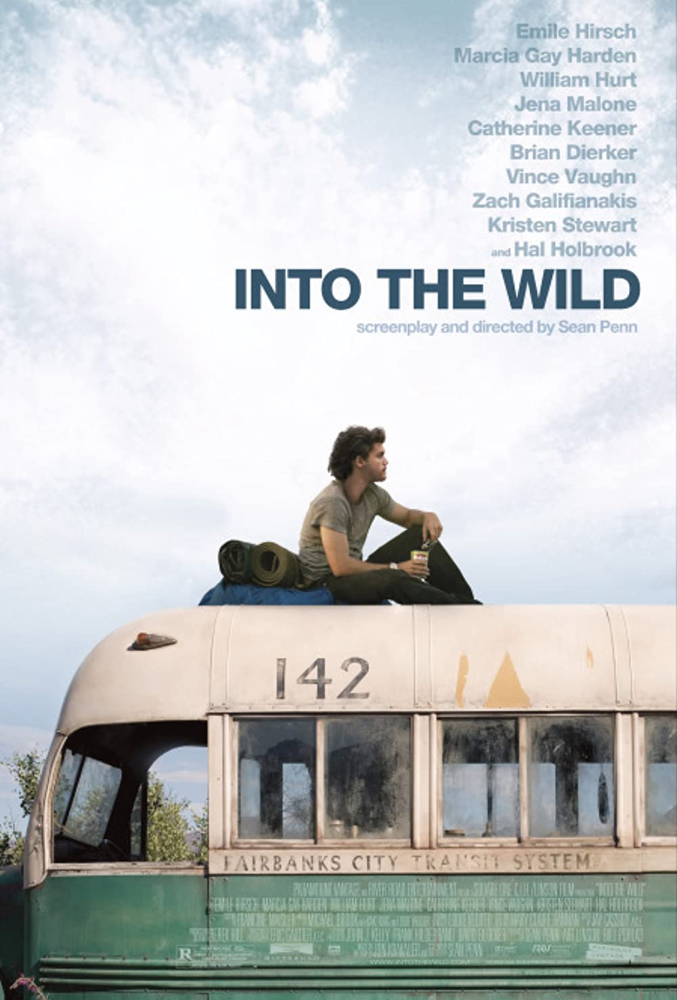

Title: Into the wild

Description: Fantastic book, here's the
description. "After graduating from Emory University, top
student and athlete Christopher McCandless abandons his
possessions, gives his entire $24,000 savings account to
charity and hitchhikes to Alaska to live in the wilderness.
Along the way, Christopher encounters a series of characters
that shape his life."
Buy on Amazon Here
Title: All Falls Down
Artist: Kanye West
Check Out on Youtube